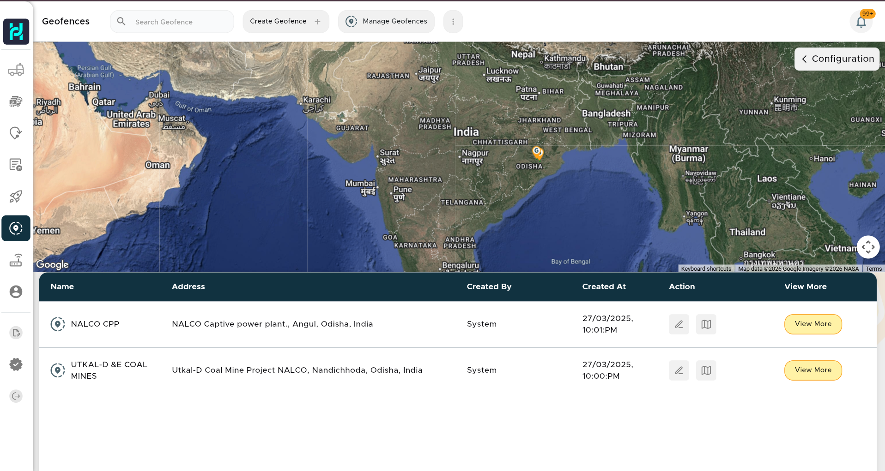
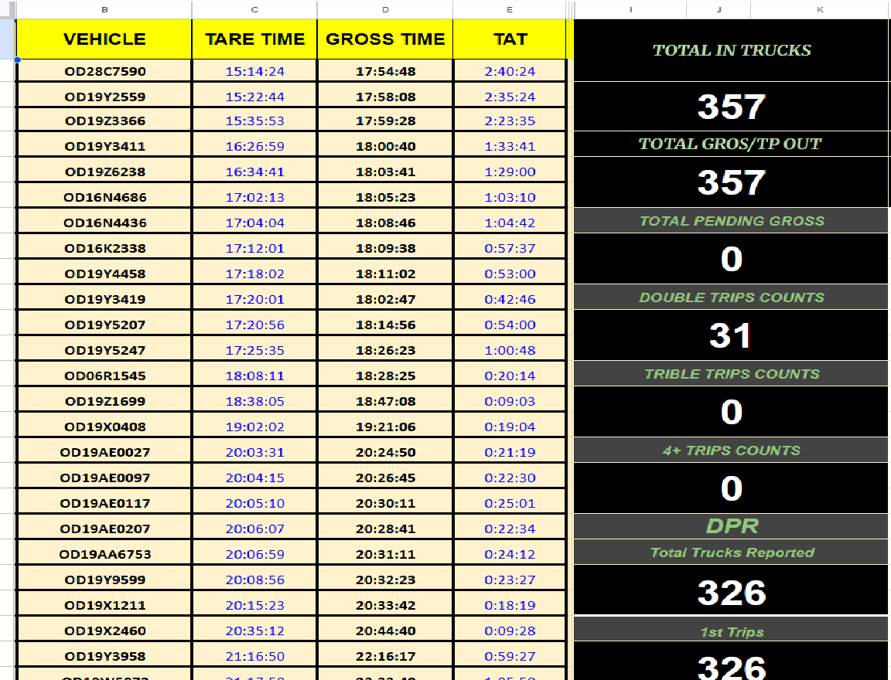

Advanced based vehicle monitoring platform developed for real-time vehicle tracking, intelligent route mapping, geo-fencing alerts, TAT monitoring and centralized live movement visibility.
Intelligent Route Visibility & Operational Time Reduction
Separate patrol vehicle was required for manual route monitoring.
Drivers were manually contacted for live location updates.
Real-time vehicle tracking with centralized visibility dashboard.
Instant zone alerts and route deviation monitoring.
Route Mapping • Geo Fencing • TAT Analytics



